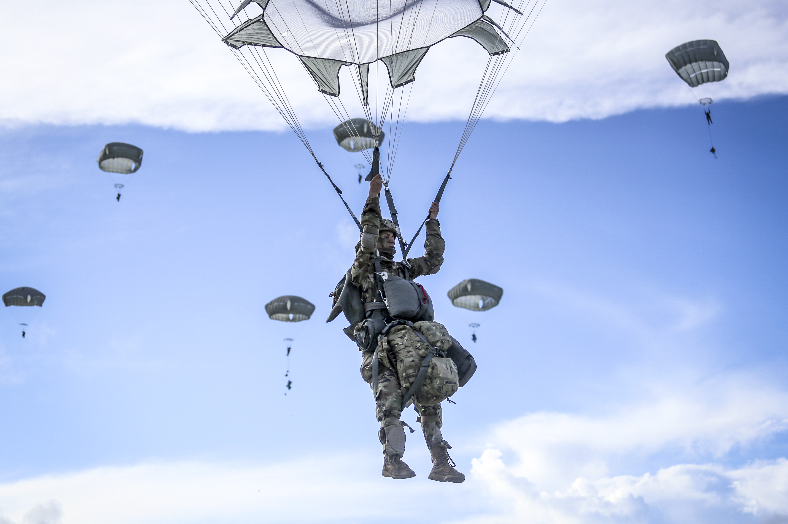

 Paratroopers are used for tactical advantage as they can be inserted into the battlefield from the air, thereby allowing them to be positioned in areas not accessible by land. It is one of the three types of "forced entry" strategic techniques for entering a theater of war; the other two are by land and sea. This ability to enter the battle from different locations allows paratroopers to evade fortifications that are designed to stop attacks from predictable paths.
This doctrine was first practically applied by the Italians and Soviets. During World War II, however, the two countries' ground forces were often overstretched, leaving their elite paratroopers to be employed as regular infantry. The Germans were the first to use paratroopers (Fallschirmjäger) extensively during the war, followed later by the western Allies.
In World War II, paratroopers used round parachutes that could be minimally steered by pulling on the risers and suspension lines. German paratroopers, whose harnesses had a single riser attached at the back, couldn't steer as effectively. Today, paratroopers still use round parachutes, sometimes modified for better control, usually deployed using a static line.
Article courtesy of Wikipedia. Image courtesy of Official US Navy on Flickr.